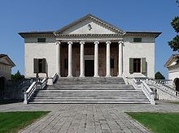
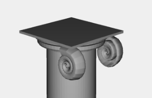

Villa Badoer is a villa located in the Fratta Polesine in the Veneto region. Called "la Badoera", was designed for the noble Francesco Badoer by the architect Andrea Palladio in 1554 and built between the years 1556-1563. This villa had the function of supporting field's administration and showing the economic prestige of Francesco Badoer. The villa, since 1996, has been part of the "UNESCO World Heritage Site".

The project in plasm focuses on representing the main building with particular attenction for the details of his structure components (rather than his forniture). Every little parts, from the steps to the capitals, are designed with the aim to be as soon as possible similar to the original one.
Components
Hierarchical decomposition:
- 1. Base
- foundations
- steps
- rails 2. Building
- walls
- ledge
- columns 3. Top
- tympanum
- guttae
- roof 4. Components
Plants & Documentation
Though it's possible to find some plants on the web that isn't helpfull because of their incongruence between them. No proportion scale can be found and building's draw are never the same (see image below). As consequence the proportion factor is chosen with large approssimation belonging it from the pictures. Morover these images are most of all photos taken from big distances, making impossible to reconstract a precise model.
Base
In the base part we can find the foundation, generated by the plasm function SIMPLEX_GRID,
the steps and the rails. For the steps a profile of a single step is created using a BEZIER curve, then this
profile is projected for all the lenght of the step with the function CYLINDRICAL_SURFACE.
To draw a single rail more than a suppurt function is used, in particular a rail is decomposed in the base, the top and mullions. Each of these
components are implemented with subfunction. The first two are functions that generate a single component
with a defined lenght in orizontal or oblique position without a rotation.
This makes codes much more "light" even with a more defined domain. For the mullion there is
a function that generats a single mullion with a specific height using ROTATIONAL_SURFACE.
Building
The central part is composed by walls, columns and the ledge all around the building. For a single wall is used
the function TRIANGOLAR_DOMAIN two times. For the ledge it's used a NUBS cerve to create the profile
and a BEZIER function to generate the entire ledge. A single column is drawn using NUBS and ROTATIONAL_SURFACE and replicated.
The capital is composed in two part each with two spiral. This spiral is obtained using the function RULED_SURFACE
that shaps a NUBS profile with spiral's points. To join the two spiral obtained is used a BEZIER surface that tighs in the middle.
To join the two parts is used a BEZIER.


Support or Contact
Having trouble with Pages? Check out the documentation at http://help.github.com/pages or contact support@github.com and we’ll help you sort it out.